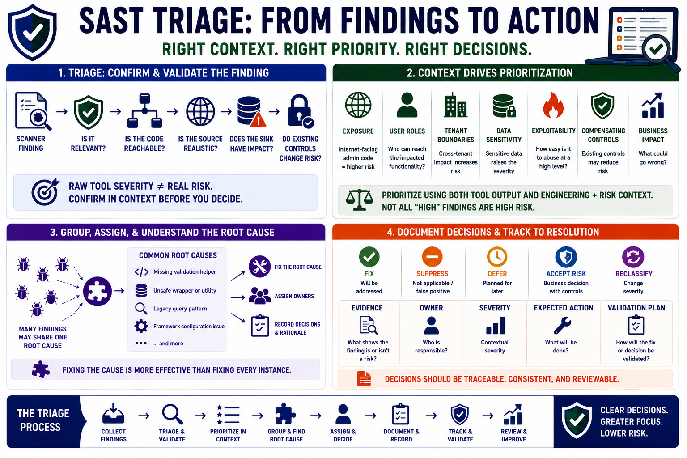

Triage and Prioritization
Connecting to LMS... Progress: in progress

Narration
Triage turns scanner output into engineering decisions. A reviewer confirms whether a finding is relevant, whether the affected code is reachable, whether the source is realistic, whether the sink has security impact, and whether existing controls change the risk. This step matters because raw tool severity may not reflect the application’s architecture, deployment model, data sensitivity, or business exposure.
Context drives prioritization. A risky pattern in an internet-facing administrative workflow may deserve urgent attention. The same pattern in unreachable test-only code may have a different disposition. Data sensitivity, user roles, tenant boundaries, exploitability at a high level, compensating controls, and business impact all influence severity. Prioritization should combine tool output with engineering and risk context.
Grouping related findings can reduce noise. Many reports may share one root cause, such as a missing validation helper, an unsafe wrapper, a legacy query pattern, or a framework configuration issue. Fixing the root cause may be more effective than treating every instance as a separate problem. Good triage also assigns owners and records why decisions were made, especially when risk is accepted or deferred.
Documentation is part of the control. A decision to fix, suppress, accept, defer, or reclassify a finding should be traceable. The record does not need to be burdensome, but it should explain the evidence, owner, severity, expected action, and validation plan. Prioritization is not about ignoring low-priority issues forever. It is about sequencing work so the highest-risk problems are addressed with clarity.